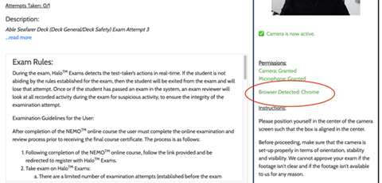

Registration:
Version 1.0
Registration is a 2-step process:
Step 1: User Information Application Here
Step 2: Register for an Account on HALO Here
Submissions from Step 1 can be found on “Applicants” in the Admin
portal.
If an entry for a user is found in “Applicants”, they’d only need to
fill out Step 2 next.
Manually enroll user:
For Step 1:
Go to:
Here
You will need information from the user to fill out all the
fields including pictures.
• Make sure photos adhere to guidelines as
we are manually uploading them.
• Submit the form when you have all
the information.
For Step 2:
Make sure that Step 1 is complete by searching for the user's
application in the “Applicants” section.
• Go to “Users” on the Admin
portal and click “Add”
• Fill out the information for the new user, set username as the email
user in their User Information application (Step 1).
• Add a
password that will be provided to the user.
• Hit Submit to add
a user on HALO.
• Next, go to “User - Face Verification Images”
to add the user’s registration headshot.
• Select the user we just added by looking for their name and email
id.
• For the image field, go to the user’s application in
“Applicants” and find the
picture labeled “Passport Photo” and
download it.
• Upload the above picture into the image field in “User - Face
Verification Images”.
• Hit “Save”
• User has been successfully registered. Now you may provide them with
the username and password to ‘Login’ to HALO Exams
Here
First Step of Registration Issues:
Version 1.0
If the User is unnable to submit the first step of their Registration Application.
• This is most likely an issue with the documents they have tried to upload.
• Please Access the admin portal on HALO to check the User's applicant model
Look though the application to see if the photo they have uploaded is either
poor quality,
or the wrong photo altogether.
Face Detection Failure:
Version 1.0
If the User is unnable to be recognized by the face detection step, please ask if they are wearing any Hats, Sunglasses or anything obstructing their face and to please remove them.
This could also be an issue involving the background of the User's environment as it could be hard for the camera to focus on the User.
• Please Ask the User if they could try again, facing against a blank wall this time
Exam Freeze Issue:
Version 1.0
• Ask the user to click on "Exam Center" and then click on “Leave"
when prompted if they would like to exit the exam.
• Once on the
Exam Center, instruct the user to find their exam and click “Open”.
• Click "Continue Exam" and it should bring them back to the same
question they were on when they got stuck.
Advise the user to follow these steps if their exam were to freeze again.
Find User Exam Attempt:
Version 1.0
• To delete an exam attempt and let the user restart an attempt, go to
the user’s exam attempt on the “User Stats” page.
• Look up the
exam attempt by using the Filter/Search function on the page.
• Click on “View Details” for the respective exam.
Confirm the attempt number of the exam and other details.
Delete an Exam Attempt to allow Retake:
Version 1.0
This feature can be used to provide another attempt of an exam by deleting an attempt
• Navigate to a User’s exam attempt as explained above.
• Scroll
all the way to the bottom and click “Delete Exam”
• The user can now restart the exam and it will start from the
beginning.
Resume an Exam For User:
Version 1.0
• Navigate to a User’s exam attempt as explained in "Find User Exam Attempt"
• Click the
“Resume Exam” green colored button to:
Unblock the user
Reset the exam so violations are removed
Give the user the ability to resume the exam
• Please ask the user to go back to the “Exam Center” and start their
exam again.
• This action can only be done if the time for the exam has not
passed.
Resetting User Password:
Version 1.0
If a user is having trouble resetting their password:
• Suggest the user to check their spam folder for an email by HALO
Exams that says “Password Reset”
• Check the “Sent” emails in
help@halo-exams.com’s
mailbox for the user’s password reset email.
• If found, forward it to the user again. It should typically get into
their inbox this time.
Halo App Instillation 'Developer cannot be verified' :
Version 1.0
User's may encounter a problem on Mac when downloading the Halo Desktop Apllication. There will be a popup "Halo desktop app is not a verified publisher of Apple"
Advise the user to follow these steps if they need to allow permissions on their PC.
• Inside of this modal, we will click Cancel/Ok; then go to the Launchpad > System Preferences > Security & Privacy and click Open Anyway.
Permissions Issue
Version 1.0
User's may encounter a problem where it does not allow them access to their camera or microphone on a Windows / PC.
Advise the user to follow these steps if they need to allow permissions on their PC.
• Navigate to the windows Icon in the bottom left corner of your screen.
• Select the Settings Icon, then navigate to the Privacy tab.
• On the left side of the settings is a table, scroll down to the Camera/Microphone sections.
Make sure that Camera and desktop app microphone permissions are both allowed.
App or Browser Related Issues
Version 1.0
• If there are any issues that you’re not sure how to handle, ask the user what computer(Windows or Mac) AND which browser are they using.
• After making sure that the user is NOT on a mobile/Ipad, ask the user to close the app and to open Google Chrome.
• On Chrome, going to www.haloexams.com and logging in should direct the user towards their exams..
• To confirm, you may ask the user to tell you what it says against “Browser Detected” on the exam details screen:
Exam Missing in Dropdown Menu:
Version 1.0
If the User is unable to view their Exam in the "Request an Exam" Dropdown Menu
Inside of their Exam Center
• This is most likely a simple code change to implement the specific Exam into the Dropdown
Please alert (Multimedia@northeastmaritime.com)
as soon as possible so we can resolve this issue
Advise the user to please allow the changes to be made and to refresh their webpage afterward.
Pre - environment Scan:
Version 1.0
If the user has completed their pre-environment scan,
and is waiting for the process to complete for more than 15 minutes.
• Ask the user what type of internet connection they are on
If the user is on a Satellite / Vessel connection Inform them they should try this process again
If the user is on a wired connection
Advise the user to please refresh the page, they may need to wait a minute.
Camera Permissions / Video Upload Limbo:
Version 1.0
If a user encounters the issue where their camera is unable to upload any video to HALO Exam screening.
• Ask the user what computer (Windows or Mac) they are using.
• Also, ask the student if they are using the stand alone app or if they are on a browser
• If the user Is currently taking the Exam on a vessel with unreliable Bandwidth / Internet Connection,
this is most likely the problem.
Email Templates:
HALO° User Invalid ID Email Template:
Hi {StudentName},
Our records indicate that you did not upload a valid photo ID during your registration on HALO Exams. It shows that the headshot has been uploaded twice.
Please send over a valid photo ID (driver's license, state ID or passport) to this email, and we will update your profile on HALO. Please be aware that we won't be able to proceed with approval of your exams without the photo ID as part of your profile. This is mainly because the exam is taken online, and we need to verify the identity of the individual taking the exam for compliance and issuance of any license(s).
Please let us know if you have any questions.
HALO Education Systems
Password Reset Email:
Find the user’s password reset email in the Sent folder and forward
the email again to the user.
It is possible that they have it in
their Spam folder, but manually re-sending the email ends up in
their inbox. Example Email Below
Hello Tom,
I have manually forwarded the password reset email that you requested. The original email may have gone into your spam folder, so if you ever need a password reset in the future I would check there if you cannot find the email.
If there is anything else we can help you with, please let us know.
Thank you,
HALO Education Systems